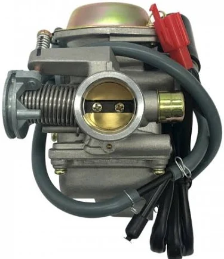

Carburetor Inspection
We inspect the carburetor for dirt, blockages, incorrect adjustments, damaged components and other problems affecting fuel delivery.
Diagnose and resolve fuel-system problems affecting your motorcycle's starting, performance, fuel consumption and overall engine operation.

A motorcycle's fuel system plays an important role in delivering the correct amount of fuel to the engine. Problems with the carburetor, fuel lines, filters or fuel delivery can quickly affect the way your bike runs.
We inspect and diagnose common fuel-system problems such as poor starting, rough idling, excessive fuel consumption, fuel leaks and an engine that is running too rich or too lean.
Whether your motorcycle uses a carburetor or another fuel-delivery system, we can help identify the cause of the problem and recommend the appropriate repair or adjustment.
Book a fuel system serviceWe inspect the fuel system to identify blockages, incorrect fuel delivery, contamination and other problems affecting engine performance.
We inspect the carburetor for dirt, blockages, incorrect adjustments, damaged components and other problems affecting fuel delivery.
Fuel flow is checked to identify restrictions, blockages or other issues that may prevent the engine from receiving the fuel it needs.
The fuel filter and related components are checked for dirt, contamination and restrictions that could affect fuel delivery.
Where required, the carburetor can be cleaned to remove dirt and deposits that may interfere with proper fuel delivery.
Fuel and air mixture settings can be inspected and adjusted where appropriate to help the engine run more smoothly.
We investigate symptoms such as poor starting, rough running, hesitation and excessive fuel consumption to help identify the underlying cause.
A motorcycle that is running too rich is receiving more fuel than the engine can properly burn. This can affect performance, fuel economy and starting.
Fuel-system problems can also cause the opposite condition, where the engine is receiving too little fuel. Correct diagnosis is important before making adjustments.

Fuel-system problems can appear in different ways. If you notice any of these symptoms, it may be time to have your motorcycle inspected.
Your motorcycle is using noticeably more fuel than normal and requires frequent refuelling.
The bike takes several attempts to start or struggles to start when the engine is cold or warm.
The motorcycle hesitates, bogs down or does not respond smoothly when you open the throttle.
Excess fuel can result in poor fuel economy, rough running and dark or sooty spark plug deposits.
Incorrect fuel delivery can cause poor running, hesitation and other engine performance problems.
Fuel around the tank, carburetor, fuel lines or other components should be inspected as soon as possible.
These are some common fuel-system complaints that can affect motorcycles, especially bikes used regularly for commuting and delivery work.
Dirt or deposits inside the carburetor can restrict fuel passages and affect normal engine operation.
A restricted filter can reduce fuel flow and cause hesitation, poor performance or starting problems.
Incorrect air and fuel mixture settings can cause the motorcycle to run too rich or too lean.
Damaged, restricted or leaking fuel lines can interfere with safe and consistent fuel delivery.
Dirt, water or contaminated fuel can affect the operation of the fuel system and engine.
Carburetor settings can be inspected and adjusted where required to improve fuel and air delivery.
We listen to your symptoms and inspect the motorcycle to identify possible fuel-system problems.
Fuel-system components such as the carburetor, fuel filter, lines and fuel delivery system are checked.
Cleaning, adjustment or other required work is carried out according to the condition of the motorcycle.
The motorcycle is checked after the service to confirm that the fuel-system issue has been addressed as far as possible.
From carburetor problems to poor fuel economy, hard starting and incorrect fuel mixtures, let us help identify the cause and get your motorcycle running properly again.
Don't let poor fuel economy, hard starting or poor engine performance keep your motorcycle off the road.